Chapter 7 Hierarchical Modeling
7.1 Introduction to Hierarchical Modeling
library(LearnBayes)
library(lattice)Fit logistic model for home run data for a particular player
logistic.fit <- function(player){
d <- subset(sluggerdata, Player==player)
x <- d$Age
x2 <- d$Age^2
response <- cbind(d$HR, d$AB - d$HR)
list(Age=x,
p=glm(response ~ x + x2,
family=binomial)$fitted)
}names <- unique(sluggerdata$Player)
newdata <- NULL
for (j in 1:9){
fit <-logistic.fit(as.character(names[j]))
newdata <- rbind(newdata,
data.frame(as.character(names[j]),
fit$Age, fit$p))
}
names(newdata) <- c("Player", "Age", "Fitted")
xyplot(Fitted ~ Age | Player,
data=newdata,
type="l", lwd=3, col="black")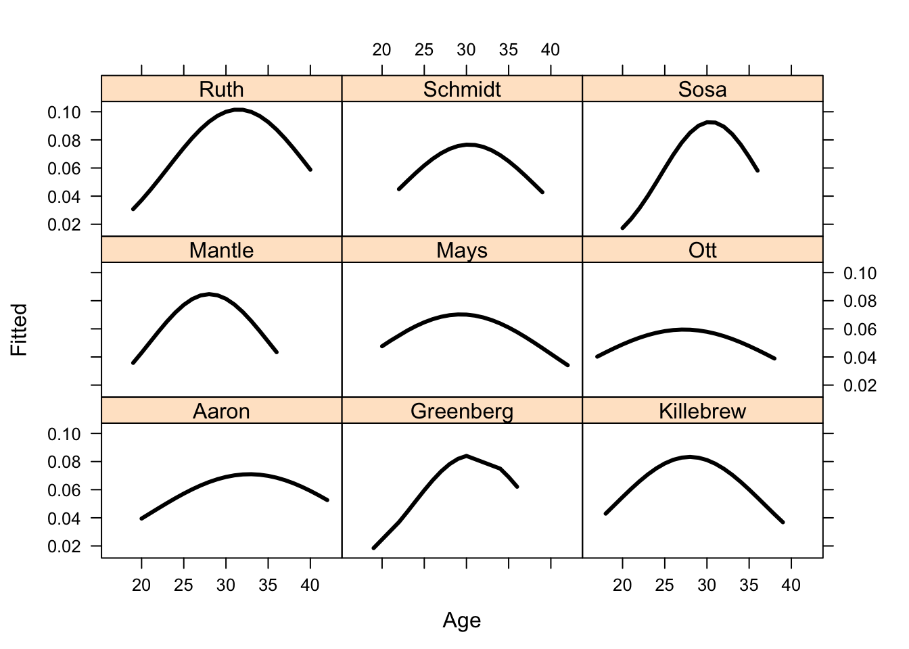
7.2 Individual or Combined Estimates
with(hearttransplants,
plot(log(e), y / e, xlim=c(6, 9.7),
xlab="log(e)", ylab="y/e"))
with(hearttransplants,
text(log(e), y / e,
labels=as.character(y), pos=4))
7.3 Equal Mortality Rates?
Using posterior predictive checks to see if equal mortality rate model is appropriate.
with(hearttransplants, sum(y))## [1] 277with(hearttransplants, sum(e))## [1] 294681lambda <- rgamma(1000, shape=277, rate=294681)
ys94 <- with(hearttransplants,
rpois(1000, e[94] * lambda))hist(ys94, breaks=seq(0.5, max(ys94) + 0.5))
with(hearttransplants,
lines(c(y[94], y[94]), c(0, 120), lwd=3))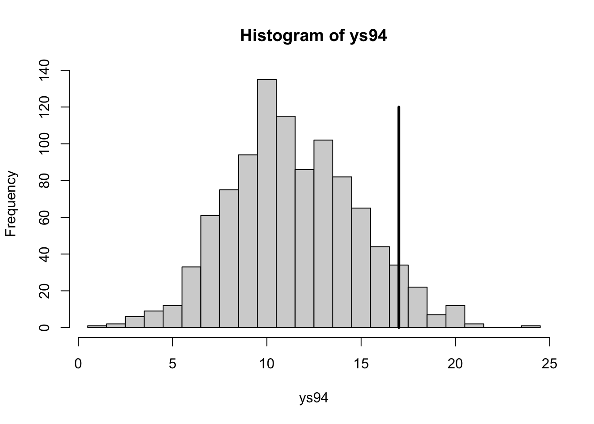
Find posterior predictive distribution of each observation with its posterior predictive distribution.
lambda <- rgamma(1000, shape=277, rate=294681)
prob.out <- function(i){
ysi <- with(hearttransplants,
rpois(1000, e[i] * lambda))
pleft <- with(hearttransplants,
sum(ysi <= y[i]) / 1000)
pright <- with(hearttransplants,
sum(ysi >= y[i]) / 1000)
min(pleft, pright)
}
pout <- sapply(1:94, prob.out)with(hearttransplants,
plot(log(e), pout, ylab="Prob(extreme)"))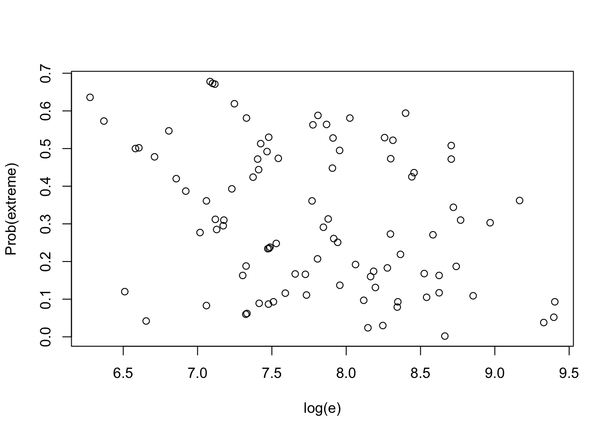
7.4 Modeling a Prior Belief of Exchangeability
Graph of two-stage prior to model a belief in exchangeability of the Poisson rates.
pgexchprior <- function(lambda, pars){
alpha <- pars[1]
a <- pars[2]
b <- pars[3]
(alpha - 1) * log(prod(lambda)) -
(2 * alpha + a) * log(alpha * sum(lambda) + b)
}alpha <- c(5, 20, 80, 400)
par(mfrow=c(2, 2))
for (j in 1:4){
mycontour(pgexchprior,
c(.001, 5, .001, 5),
c(alpha[j], 10, 10),
main=paste("ALPHA = ",alpha[j]),
xlab="LAMBDA 1", ylab="LAMBDA 2")
}
7.5 Simulating from the Posterior
Representing posterior as [\(\mu, \alpha\)] [\(\{\lambda_j\} | \mu, \alpha\)].
Focus on posterior of [\(\mu, \alpha\)]:
datapar <- list(data = hearttransplants, z0 = 0.53)
start <- c(2, -7)
fit <- laplace(poissgamexch, start, datapar)
fit## $mode
## [1] 1.883954 -6.955446
##
## $var
## [,1] [,2]
## [1,] 0.233694921 -0.003086655
## [2,] -0.003086655 0.005866020
##
## $int
## [1] -2208.503
##
## $converge
## [1] TRUEpar(mfrow = c(1, 1))
mycontour(poissgamexch, c(0, 8, -7.3, -6.6),
datapar,
xlab="log alpha", ylab="log mu")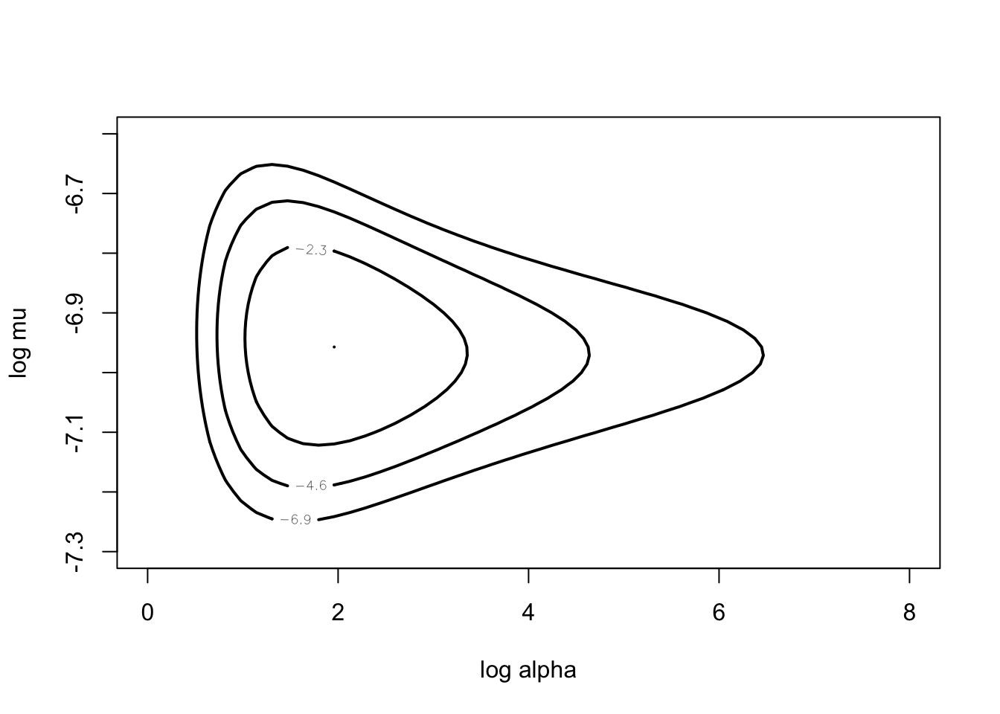
start <- c(4, -7)
fitgibbs <- gibbs(poissgamexch,
start, 1000,
c(1, .15), datapar)
fitgibbs$accept## [,1] [,2]
## [1,] 0.52 0.483mycontour(poissgamexch,
c(0, 8, -7.3, -6.6),
datapar,
xlab="log alpha", ylab="log mu")
points(fitgibbs$par[, 1], fitgibbs$par[, 2])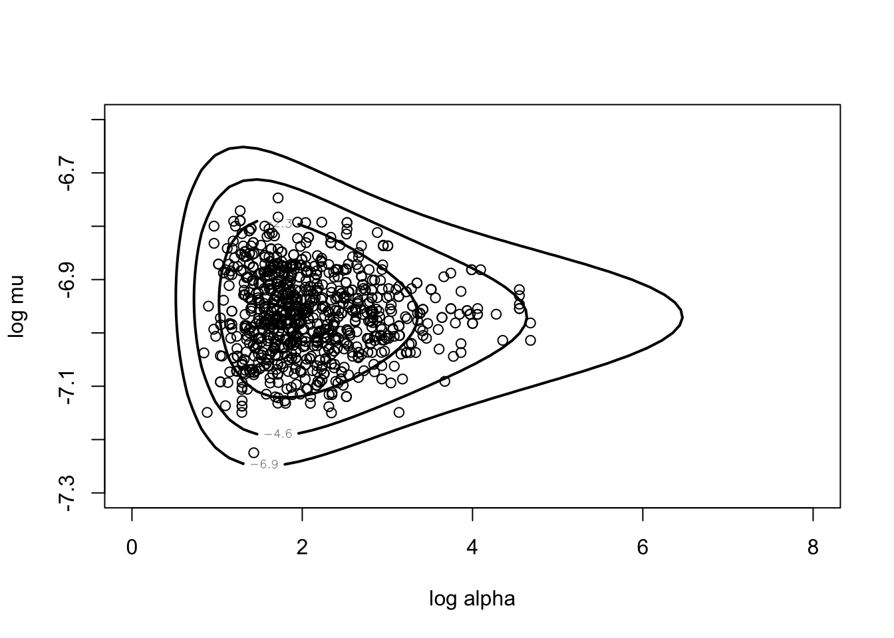
plot(density(fitgibbs$par[, 1], bw = 0.2))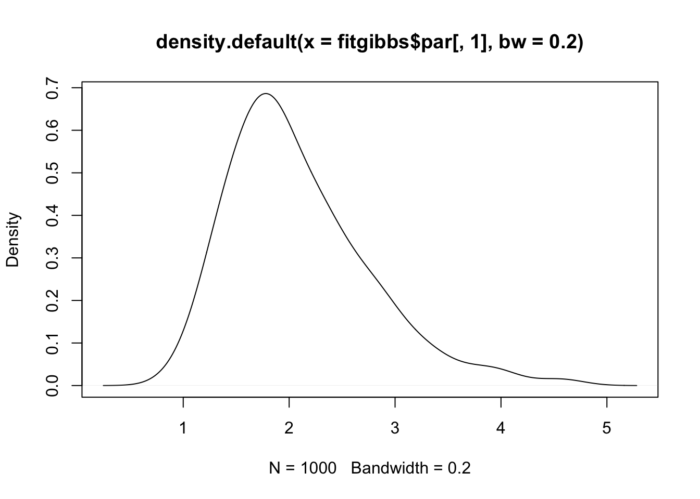
Posterior of rates:
alpha <- exp(fitgibbs$par[, 1])
mu <- exp(fitgibbs$par[, 2])
lam1 <- rgamma(1000, y[1] + alpha,
hearttransplants$e[1] + alpha / mu)
alpha <- exp(fitgibbs$par[, 1])
mu <- exp(fitgibbs$par[, 2])with(hearttransplants,
plot(log(e), y/e, pch = as.character(y)))
for (i in 1:94) {
lami <- with(hearttransplants,
rgamma(1000, y[i] + alpha,
e[i] + alpha/mu))
probint <- quantile(lami, c(0.05, 0.95))
with(hearttransplants,
lines(log(e[i]) * c(1, 1), probint))
}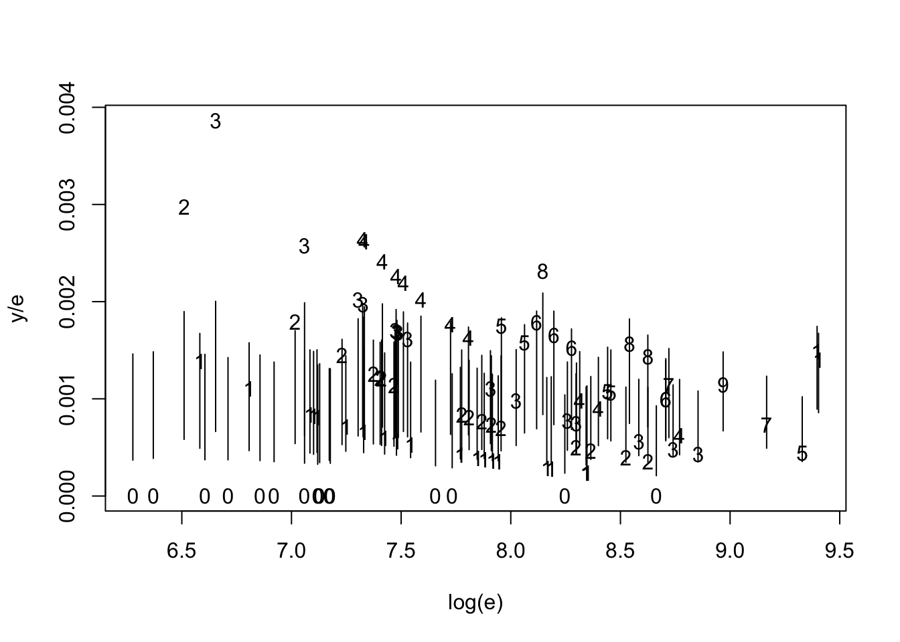
7.6 Posterior Inferences
datapar <- list(data = hearttransplants, z0 = 0.53)
start <- c(2, -7)
fit <- laplace(poissgamexch, start, datapar)
fit## $mode
## [1] 1.883954 -6.955446
##
## $var
## [,1] [,2]
## [1,] 0.233694921 -0.003086655
## [2,] -0.003086655 0.005866020
##
## $int
## [1] -2208.503
##
## $converge
## [1] TRUEpar(mfrow = c(1, 1))
mycontour(poissgamexch,
c(0, 8, -7.3, -6.6), datapar,
xlab="log alpha",ylab="log mu")
start <- c(4, -7)
fitgibbs <- gibbs(poissgamexch,
start, 1000,
c(1,.15), datapar)alpha <- exp(fitgibbs$par[, 1])
mu <- exp(fitgibbs$par[, 2])Look at posteriors of shrinkages.
shrink <-function(i)
with(hearttransplants,
mean(alpha / (alpha + e[i] * mu)))
shrinkage=sapply(1:94, shrink)with(hearttransplants,
plot(log(e), shrinkage))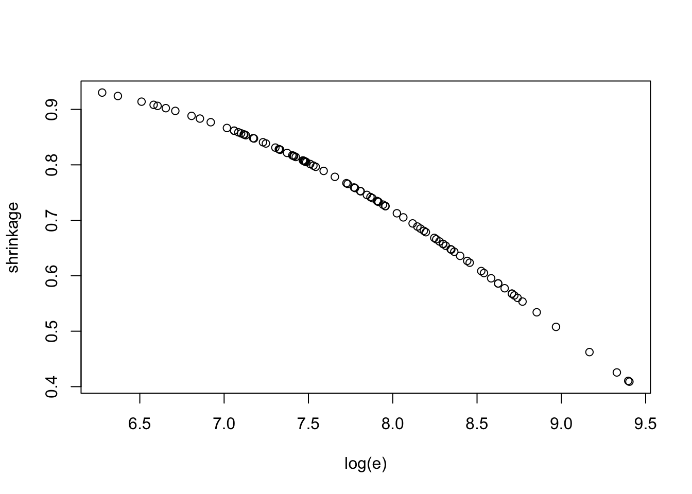
Comparing hospitals.
mrate <- function(i){
with(hearttransplants,
mean(rgamma(1000, y[i] + alpha,
e[i] + alpha/mu)))
}
hospital <- 1:94
meanrate <- sapply(hospital,mrate)
hospital[meanrate == min(meanrate)]## [1] 85sim.lambda <- function(i) {
with(hearttransplants,
rgamma(1000, y[i] + alpha,
e[i] + alpha / mu))
}
LAM <- sapply(1:94, sim.lambda)compare.rates <- function(x) {
nc <- NCOL(x)
ij <- as.matrix(expand.grid(1:nc, 1:nc))
m <- as.matrix(x[,ij[,1]] > x[,ij[,2]])
matrix(colMeans(m), nc, nc, byrow = TRUE)
}better <- compare.rates(LAM)better[1:24, 85]## [1] 0.174 0.190 0.086 0.144 0.124 0.227 0.203 0.166 0.067 0.255 0.196 0.176
## [13] 0.202 0.097 0.070 0.231 0.239 0.088 0.258 0.185 0.166 0.152 0.057 0.0877.7 Bayesian Sensitivity Analysis
Explore sensitivity of inference with respect to the choice of \(z_0\) in prior.
datapar <- list(data = hearttransplants,
z0 = 0.53)start <- c(4, -7)
fitgibbs <-gibbs(poissgamexch,
start, 1000,
c(1,.15), datapar)sir.old.new <- function(theta, prior, prior.new){
log.g <- log(prior(theta))
log.g.new <- log(prior.new(theta))
wt <- exp(log.g.new - log.g -
max(log.g.new - log.g))
probs <- wt / sum(wt)
n <- length(probs)
indices <- sample(1:n, size=n,
prob=probs, replace=TRUE)
theta[indices]
}prior <- function(theta){
0.53 * exp(theta) / (exp(theta) + 0.53) ^ 2
}
prior.new <- function(theta){
5 * exp(theta) / (exp(theta) + 5) ^ 2
}log.alpha <- fitgibbs$par[, 1]
log.alpha.new <- sir.old.new(log.alpha,
prior, prior.new)library(lattice)draw.graph <- function(){
LOG.ALPHA <- data.frame("prior", log.alpha)
names(LOG.ALPHA) <- c("Prior", "log.alpha")
LOG.ALPHA.NEW <- data.frame("new.prior",
log.alpha.new)
names(LOG.ALPHA.NEW) <- c("Prior","log.alpha")
D <- densityplot(~ log.alpha,
group=Prior,
data = rbind(LOG.ALPHA, LOG.ALPHA.NEW),
plot.points=FALSE,
main="Original Prior and Posterior (solid), \nNew Prior and Posterior (dashed)",
lwd=4, adjust=2, lty=c(1,2),
xlab="log alpha",xlim=c(-3,5),col="black")
update(D, panel=function(...){
panel.curve(prior(x), lty=1, lwd=2,
col="black")
panel.curve(prior.new(x), lty=2, lwd=2,
col="black")
panel.densityplot(...)
})}draw.graph()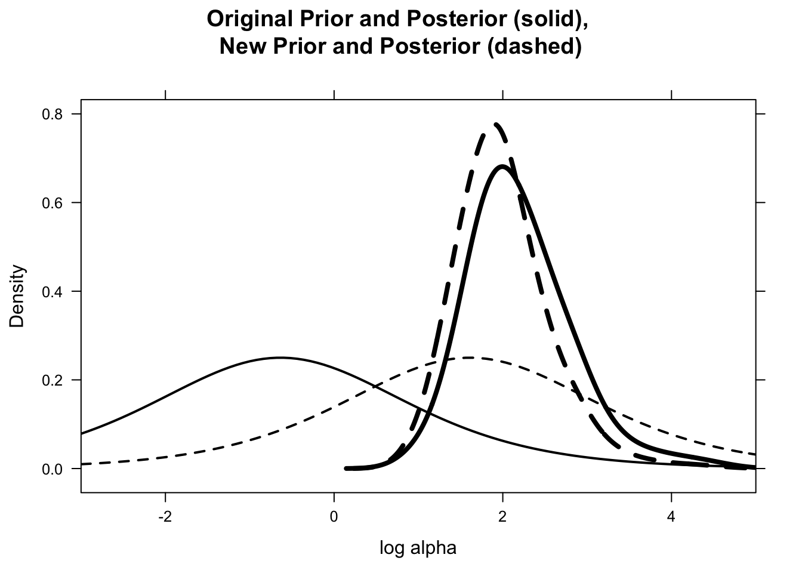
7.8 Posterior Predictive Model Checking
Study predictive distributions of observations.
datapar <- list(data = hearttransplants, z0 = 0.53)start <- c(4, -7)
fitgibbs <- gibbs(poissgamexch,
start, 1000, c(1,.15),
datapar)lam94 <- with(hearttransplants,
rgamma(1000, y[94] + alpha,
e[94] + alpha / mu))ys94 <- with(hearttransplants,
rpois(1000, e[94] * lam94))hist(ys94, breaks=seq(-0.5, max(ys94) + 0.5))
lines(y[94] * c(1, 1), c(0, 100), lwd=3)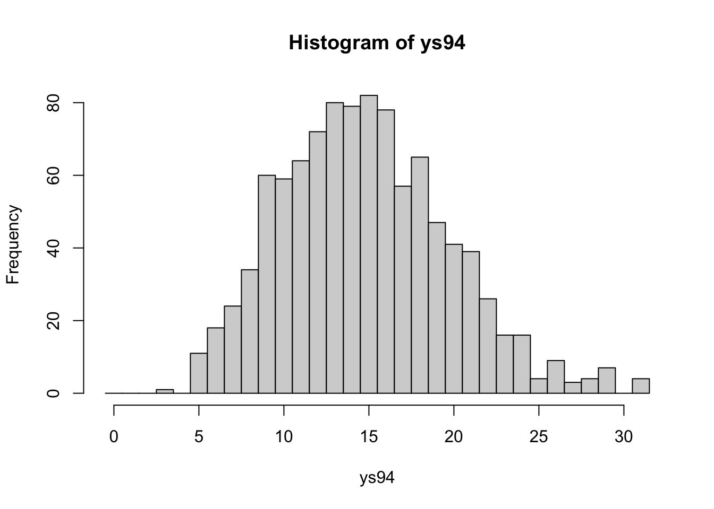
Explore the probabilities that the predictive distribution of each observation is at least as large as observed \(y_i\).
prob.out <- function(i){
lami <- with(hearttransplants,
rgamma(1000, y[i] + alpha,
e[i] + alpha / mu))
ysi <- with(hearttransplants,
rpois(1000, e[i] * lami))
pleft <- with(hearttransplants,
sum(ysi <= y[i]) / 1000)
pright <- with(hearttransplants,
sum(ysi >= y[i]) / 1000)
min(pleft, pright)
}
pout.exchange <- sapply(1:94, prob.out)plot(pout, pout.exchange,
xlab="P(extreme), equal means",
ylab="P(extreme), exchangeable")
abline(0,1)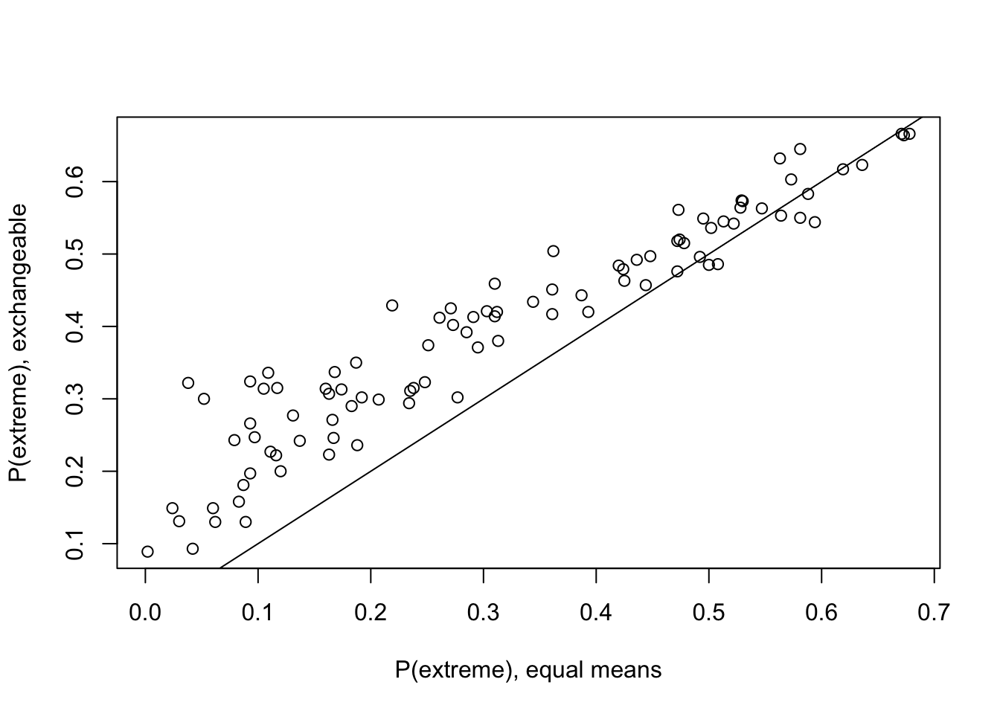